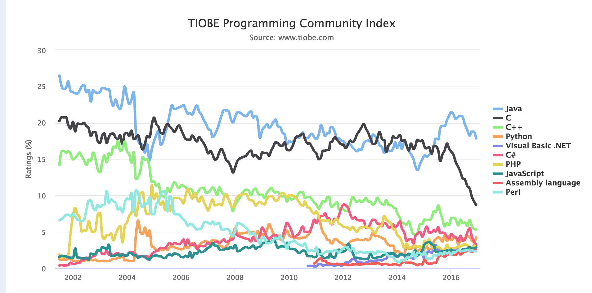

Showoff Menu
Close
Press ? for help.
All features are anonymous
Press ? for help.
All features are anonymous
Tom Hanlon
Schedule:
Tonight: about 1.5 hour of slides followed by Q & A
Homework: Git Repo and Lab instructions will be shared as a PDF
petal length, petal width, sepal length, sepal width
6.4,3.2,5.3,2.3,2
6.5,3.0,5.5,1.8,2
7.7,3.8,6.7,2.2,2
7.7,2.6,6.9,2.3,2
6.0,2.2,5.0,1.5,2
Iris Classification into 3 species based on 4 measurements
import numpy
import pandas
from keras.models import Sequential
from keras.layers import Dense
from keras.wrappers.scikit_learn import KerasClassifier
from keras.utils import np_utils
from sklearn.cross_validation import cross_val_score, KFold
from sklearn.preprocessing import LabelEncoder
from sklearn.pipeline import Pipeline
# fix random seed for reproducibility
seed = 7
numpy.random.seed(seed)
# load dataset
dataframe = pandas.read_csv("iris.csv", header=None)
dataset = dataframe.values
X = dataset[:,0:4].astype(float)
Y = dataset[:,4]
print(X)
print(Y)
#encode class values as integers
encoder = LabelEncoder()
encoder.fit(Y)
encoded_Y = encoder.transform(Y)
# convert integers to dummy variables (hot encoded)
dummy_y = np_utils.to_categorical(encoded_Y)
print(dummy_y)
# define baseline model
#def baseline_model():
# create model
model = Sequential()
model.add(Dense(4, input_dim=4, activation='relu'))
model.add(Dense(3,activation='sigmoid'))
# Compile model
model.compile(loss='categorical_crossentropy', optimizer='adam', metrics=['accuracy'])
# return model
#model.fit
model.fit(X, dummy_y, nb_epoch=200, batch_size=5)
prediction = model.predict(numpy.array([[4.6,3.6,1.0,0.2]]));
print(prediction);
# To save just the weights
model.save_weights('/tmp/iris_model_weights')
# To save the weights and the config
# Note this is what is used for this demo
model.save('/tmp/full_iris_model')
# To save the Json config to a file
json_string = model.to_json()
text_file = open("/tmp/iris_model_json", "w")
text_file.write(json_string)
text_file.close()
dataframe = pandas.read_csv("iris.csv", header=None)
dataset = dataframe.values
X = dataset[:,0:4].astype(float)
Y = dataset[:,4]
print(X)
print(Y)
Used for Data Transform Operations
encoder = LabelEncoder()
encoder.fit(Y)
encoded_Y = encoder.transform(Y)
Build the Model
model = Sequential()
model.add(Dense(4, input_dim=4, activation='relu'))
model.add(Dense(3,activation='sigmoid'))


Load above image as INDArray
INDArray imagematrix = loader.asMatrix(image);
System.out.println(imagematrix);
Output
[[[[255.00, 255.00, 255.00, 255.00],
[255.00, 0.00, 0.00, 255.00],
[255.00, 0.00, 0.00, 255.00],
[255.00, 255.00, 255.00, 255.00]]]]
Scale values between 0 and 1
DataNormalization scaler = new ImagePreProcessingScaler(0,1);
scaler.transform(imagematrix);
Output
[[[[1.00, 1.00, 1.00, 1.00],
[1.00, 0.00, 0.00, 1.00],
[1.00, 0.00, 0.00, 1.00],
[1.00, 1.00, 1.00, 1.00]]]]
Scale images to same height/width with RecordReader
Used when processing data in bulk during training
ImageRecordReader recordReader = new ImageRecordReader(height,width,channels);
Scale image to appropriate dimenstions with NativeImageLoader
Used when processing a single image for inference
NativeImageLoader loader = new NativeImageLoader(height, width, channels); \ load and scale INDArray image = loader.asMatrix(file); \ create INDarray INDArray output = model.output(image); \ get model prediction for image
Scale pixel values from 0-255 to 0-1
DataNormalization scaler = new ImagePreProcessingScaler(0,1);
scaler.fit(dataIter);
dataIter.setPreProcessor(scaler);

public class CSVExample {
private static Logger log = LoggerFactory.getLogger(CSVExample.class);
public static void main(String[] args) throws Exception {
//First: get the dataset using the record reader. CSVRecordReader handles loading/parsing
int numLinesToSkip = 0;
String delimiter = ",";
RecordReader recordReader = new CSVRecordReader(numLinesToSkip,delimiter);
recordReader.initialize(new FileSplit(new ClassPathResource("iris.txt").getFile()));
//Second: the RecordReaderDataSetIterator handles conversion to DataSet objects, ready for use in neural network
int labelIndex = 4; //5 values in each row of the iris.txt CSV: 4 input features followed by an integer label (class) index. Labels are the 5th value (index 4) in each row
int numClasses = 3; //3 classes (types of iris flowers) in the iris data set. Classes have integer values 0, 1 or 2
int batchSize = 150; //Iris data set: 150 examples total. We are loading all of them into one DataSet (not recommended for large data sets)
DataSetIterator iterator = new RecordReaderDataSetIterator(recordReader,batchSize,labelIndex,numClasses);
DataSet allData = iterator.next();
Iris Data, 3 Species, 4 features
package ai.skymind.training.demos;
import org.datavec.api.records.reader.RecordReader;
import org.datavec.api.records.reader.impl.csv.CSVRecordReader;
import org.datavec.api.split.FileSplit;
import org.datavec.api.util.ClassPathResource;
import org.deeplearning4j.datasets.datavec.RecordReaderDataSetIterator;
import org.deeplearning4j.eval.Evaluation;
import org.deeplearning4j.nn.conf.MultiLayerConfiguration;
import org.deeplearning4j.nn.conf.NeuralNetConfiguration;
import org.deeplearning4j.nn.conf.layers.DenseLayer;
import org.deeplearning4j.nn.conf.layers.OutputLayer;
import org.deeplearning4j.nn.multilayer.MultiLayerNetwork;
import org.deeplearning4j.nn.weights.WeightInit;
import org.deeplearning4j.optimize.listeners.ScoreIterationListener;
import org.nd4j.linalg.activations.Activation;
import org.nd4j.linalg.api.ndarray.INDArray;
import org.nd4j.linalg.dataset.DataSet;
import org.nd4j.linalg.dataset.SplitTestAndTrain;
import org.nd4j.linalg.dataset.api.iterator.DataSetIterator;
import org.nd4j.linalg.dataset.api.preprocessor.DataNormalization;
import org.nd4j.linalg.dataset.api.preprocessor.NormalizerStandardize;
import org.nd4j.linalg.lossfunctions.LossFunctions;
import org.slf4j.Logger;
import org.slf4j.LoggerFactory;
public class IrisNoImport {
private static Logger log = LoggerFactory.getLogger(IrisNoImport.class);
public static void main(String[] args) throws Exception {
//First: get the dataset using the record reader.
//CSVRecordReader handles loading/parsing
int numLinesToSkip = 0;
String delimiter = ",";
RecordReader recordReader = new CSVRecordReader(numLinesToSkip,delimiter);
recordReader.initialize(new FileSplit(new ClassPathResource("iris.txt").getFile()));
//Second: the RecordReaderDataSetIterator handles conversion to
//DataSet objects, ready for use in neural network
int labelIndex = 4;
int numClasses = 3;
int batchSize = 150;
DataSetIterator iterator = new RecordReaderDataSetIterator(recordReader,batchSize,labelIndex,numClasses);
DataSet allData = iterator.next();
allData.shuffle();
SplitTestAndTrain testAndTrain = allData.splitTestAndTrain(0.65); //Use 65% of data for training
DataSet trainingData = testAndTrain.getTrain();
DataSet testData = testAndTrain.getTest();
DataNormalization normalizer = new NormalizerStandardize();
normalizer.fit(trainingData);
normalizer.transform(trainingData);
//Apply normalization to the training data
normalizer.transform(testData);
final int numInputs = 4;
int outputNum = 3;
int iterations = 1000;
long seed = 6;
log.info("Build model....");
MultiLayerConfiguration conf = new NeuralNetConfiguration.Builder()
.seed(seed)
.iterations(iterations)
.activation(Activation.TANH)
.weightInit(WeightInit.XAVIER)
.learningRate(0.1)
.regularization(true).l2(1e-4)
.list()
.layer(0, new DenseLayer.Builder().nIn(numInputs).nOut(3)
.build())
.layer(1, new DenseLayer.Builder().nIn(3).nOut(3)
.build())
.layer(2, new OutputLayer.Builder(LossFunctions.LossFunction.NEGATIVELOGLIKELIHOOD)
.activation(Activation.SOFTMAX)
.nIn(3).nOut(outputNum).build())
.backprop(true).pretrain(false)
.build();
//run the model
MultiLayerNetwork model = new MultiLayerNetwork(conf);
model.init();
model.setListeners(new ScoreIterationListener(100));
model.fit(trainingData);
//evaluate the model on the test set
Evaluation eval = new Evaluation(3);
INDArray output = model.output(testData.getFeatureMatrix());
eval.eval(testData.getLabels(), output);
log.info(eval.stats());
}
}
Keras
model = Sequential()
model.add(Dense(4, input_dim=4, activation='relu'))
model.add(Dense(3,activation='sigmoid'))
DL4J
MultiLayerConfiguration conf = new NeuralNetConfiguration.Builder()
.seed(seed)
.iterations(iterations)
.activation(Activation.TANH)
.weightInit(WeightInit.XAVIER)
.learningRate(0.1)
.regularization(true).l2(1e-4)
.list()
.layer(0, new DenseLayer.Builder().nIn(numInputs).nOut(3)
.build())
.layer(1, new DenseLayer.Builder().nIn(3).nOut(3)
.build())
.layer(2, new OutputLayer.Builder(LossFunctions.LossFunction.NEGATIVELOGLIKELIHOOD)
.activation(Activation.SOFTMAX)
.nIn(3).nOut(outputNum).build())
.backprop(true).pretrain(false)
.build();
Keras
model.compile(loss='categorical_crossentropy', optimizer='adam', metrics=['accuracy'])
DL4J
MultiLayerNetwork model = new MultiLayerNetwork(conf);
model.init();
Keras
model.fit(X, dummy_y, nb_epoch=200, batch_size=5)
DL4J
model.fit(trainingData);
Keras
prediction = model.predict(numpy.array([[4.6,3.6,1.0,0.2]]));
DL4J
INDArray output = model.output(myArray);
model.to_json
json_string = model.to_json()
text_file = open("/tmp/iris_model_json", "w")
text_file.write(json_string)
text_file.close()
model.save_weights
model.save_weights('/tmp/iris_model_weights')
model.save
model.save('/tmp/full_iris_model')
Add this to your pom.xml
<dependency>
<groupId>org.deeplearning4j</groupId>
<artifactId>deeplearning4j-modelimport</artifactId>
<version>${dl4j.version}</version>
</dependency>
Sequential Model Configuration import, saved in Keras with model.to_json()
CopyMultiLayerNetworkConfiguration modelConfig =
KerasModelImport.importKerasSequentialConfiguration
("PATH TO YOUR JSON FILE)
ComputationGraph Configuration import, saved in Keras with model.to_json()
ComputationGraphConfiguration computationGraphConfig =
KerasModelImport.importKerasModelConfiguration
("PATH TO YOUR JSON FILE)
Sequential Model single file
MultiLayerNetwork network =
KerasModelImport.importKerasSequentialModelAndWeights
("PATH TO YOUR H5 FILE")
Sequential Model one file for config one file for weights
MultiLayerNetwork network =
KerasModelImport.importKerasSequentialModelAndWeights
("PATH TO YOUR JSON FILE","PATH TO YOUR H5 FILE")